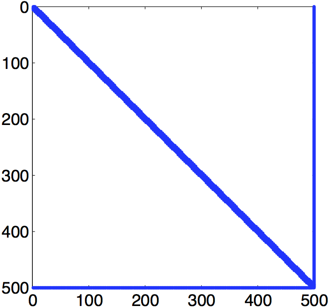

COMPUTER PROBLEMS 4.4
\(\def\ds{\displaystyle} \)
1 The left figure shows the output of Matlab spy command on the matrix \(A\). The Preconditioned GMRES Method outlined in pseudocode can be applied to the \(A\) and \(b\) defined in the problem, resulting in the right figure, showing the error as a function of step number for no preconditioner and Gauss-Seidel preconditioner (circles), and Jacobi preconditioner (squares).

3 The left figure shows the Matlab spy command. Applying the code to the \(A\) and \(b\) defined in the problem result in the right figure, showing the error as a function of step number for no preconditioner and Jacobi preconditioner (circles), and Gauss-Seidel preconditioner (diamonds).

5 The left figure shows the output of Matlab spy command on the matrix \(A\). The right figure shows the error for no preconditioner and Jacobi (circles), and Gauss-Seidel (diamonds).